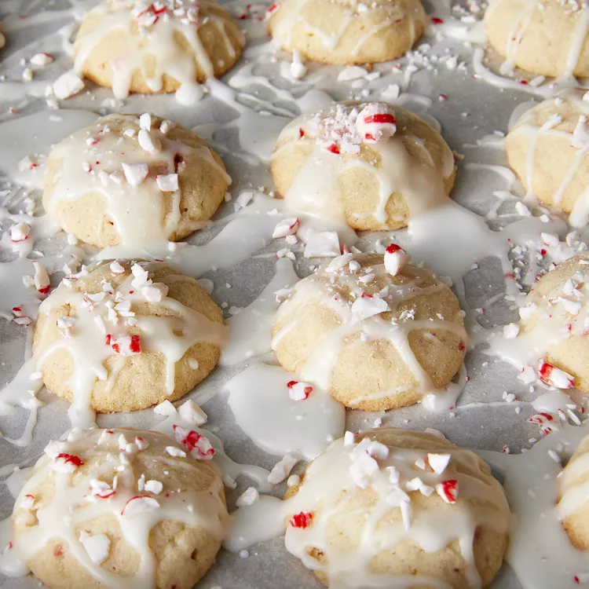

Peppermint Snowballs

Peppermint Snowballs
- Prep Time:
20 mins
- Cook Time:
10 mins
- Total Time:
30 mins
- Servings:
60
- Yield:
60 servings
Ingredients
- 3 cups confectioners' sugar
- 1 ¼ cups butter, softened
- 1 teaspoon peppermint extract
- 1 teaspoon vanilla extract
- 1 egg
- 3 cups all-purpose flour
- 1 teaspoon baking powder
- ½ teaspoon salt
- 1 cup white sugar, or as needed
- 1 cup finely crushed peppermint candy
- 3 tablespoons milk
Directions
- Preheat oven to 350 degrees F (175 degrees C). Lightly grease baking sheets, or line with parchment paper.
- Beat 1 1/2 cups confectioners' sugar with the butter, peppermint extract, vanilla extract, and egg in a mixing bowl at Medium speed until well blended and creamy, 2 to 3 minutes. Reduce speed to Low, and gradually mix in the flour, baking powder, and salt until well blended, 1 to 2 minutes. Stir in 1/2 cup crushed peppermint candy using a wooden spoon.
- Place the white sugar in a shallow bowl. Roll a small amount of cookie dough between your hands to make 3/4 inch diameter balls. Roll in sugar. Place 1 inch apart on prepared baking sheets.
- Bake in preheated oven until light brown, 10 to 12 minutes. Remove and cool on racks.
- Meanwhile, to make the glaze, stir the remaining 1 1/2 cups confectioners sugar together with the milk in a bowl until smooth. Drizzle cooled cookies with the glaze, and sprinkle immediately with the remaining crushed peppermint candy.